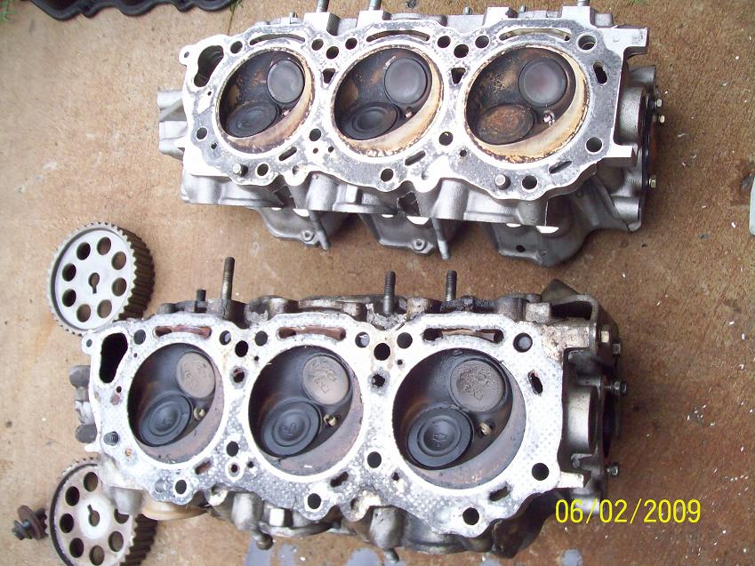
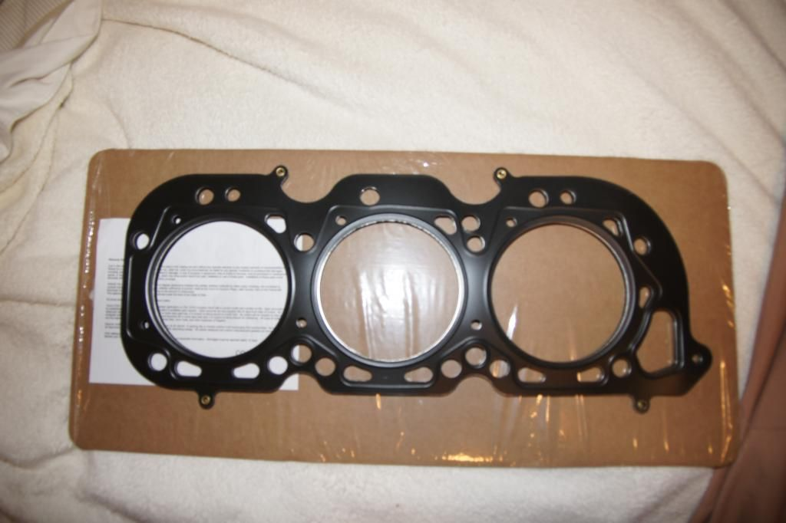
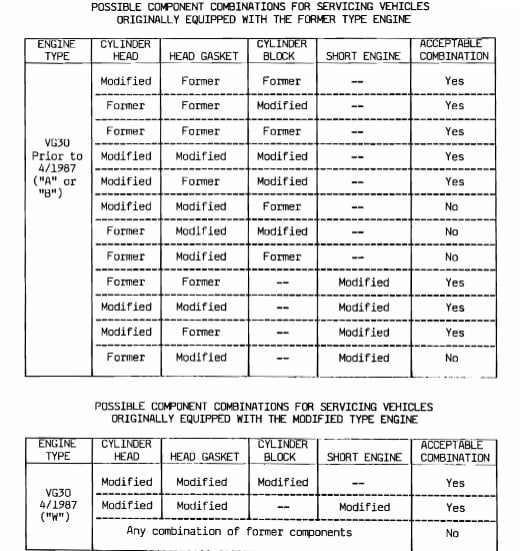

-
I am thinking about buying the Cometic mls head gaskets. I called the company they said that the gasket is for 84 to 89 z31. I asked about the added w series coolant hole and if it would work on my w series block , and they did not know.... Does anyone know if this mls gasket has the extra hole or not it not can I run it with the w series. If not is there a good way to modify it to work?
-
You can run it. I'm running OWO heads on A/B block with them and have had no issues.Usual Z31 suspect: Garage Queen (aka broken)

-
Where did you purchase these gaskets? And I have the 87.5 mm weisco pistons do I have to get a larger than stock bore? I feel like the 88 mm will be too largeOriginally posted by 300zxturboftw
I tryed ordering from company direct and they would not sell them to me -
I was only aware that Cometic offered MLS gaskets for the twin cam VG30 motors, not the single VGs.
1986 300ZX Turbo…sold
1990 Skyline GT-R…new money pit
2014 Juke Nismo RS 6-speed…daily -
You can't get them thru cometic anymore. You will have to pay the $2500 fee if you want them made.Usual Z31 suspect: Garage Queen (aka broken)
-
-
This has nothing to do with running it on a W series and is very bad information. Using OWO heads on an A/B series block doesn't make use of the extra passages, as the exist in the heads and not the block, so you are essentially blocking them off, which is fine in your case. This would cause issues in a W series or a VG33 where the passages exist in both the head and block and the coolant needs to flow.Originally posted by 300zxturboftwPrius… because Pretentious wouldn't fit across the back of the car…
Cheap, Fast, Reliable - pick any two
My 1986 Turbo Build -
Correct me if I'm wrong, the V52 heads have the water jacket, where the W series don't. I was concerned that blocking off the passage in block would cause issues, but it hasn't.Originally posted by jaqattack02
Edit: nope you are right. Looking at this http://www.motoiq.com/MagazineArticl…san-vg30e.aspx
shows using vg30 heads on owo you would drill heads where coolant needs to flow. That's so odd though, because some of the OWO heads didn't have the water ports the v52 heads did.
See bottom for V52 heads and top for vg33 owo
Usual Z31 suspect: Garage Queen (aka broken)
-
I made a couple versions of the MLS gaskets. There is no "easy" way to punch holes for those coolant ports because those holes need to be embossed by a machine otherwise they will not seal and leak coolant.

ASCO says theirs will work for VG33 too and has similar design
jaqattack, have you used an MLS gasket on a W series before or know someone who has had issues? I doubt there will be any.Usual Z31 suspect: Garage Queen (aka broken)
-
No, i just had to do research on what head gaskets to use with different combinations of heads and block. From my research A/B series blocks can run any of the later heads and use the gasket that matches the block. W block has to have W series (85e?) or later heads, and has to have W series gaskets because of the extra water ports.Prius… because Pretentious wouldn't fit across the back of the car…
Cheap, Fast, Reliable - pick any two
My 1986 Turbo Build -
This info from RedZ31 covers it.
These are the primary aluminum component of the cylinder head assembly. For 300ZX's they came in two varieties. These are referred to as the "former" and "modified" (or W-series) according to Nissan. All VG30 engines produced until 4/87 are former, and all afterwards are modified (W-series). Later VG engines including the VG33 have W series heads. There are only slight differences between these head castings, most notably the water ports and the intake port shape. The interchange information from Nissan's TSB on the topic is here for your reference:Prius… because Pretentious wouldn't fit across the back of the car…
Cheap, Fast, Reliable - pick any two
My 1986 Turbo Build -
Thanks for the info everyone -
Sorry to bring back an old thread but I am wondering the same thing. So if MLS gaskets that have the added w series coolant passage work on all engines being a, b, and w series. Why can't you run oem composite w series head gaskets on an a, b block with w series or OWO heads?4/87 Red turbo (DD Until the 84 is done) http://z31performance.com/forum/…p?f=13&t=25200
86 NA Long gone
1/87 White turbo (parted out)
84 Turbo Vg33 holset HX35 http://z31performance.com/forum/…p?f=13&t=25315
85 Turbo (Sold)
93 Q45 Sold


Copyright © 2006–. All rights reserved. Privacy Policy